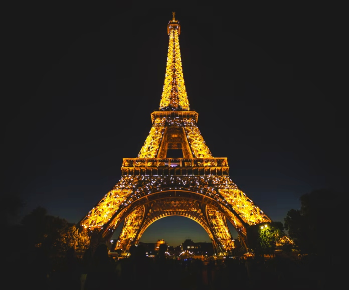

Islandia es, sin duda, uno de los mejores destinos de viaje; ha aumentado exponencialmente su interés en los últimos años. El destino número 1 en Islandia es La Laguna Azul. El año pasado, tuvo un número récord de visitantes internacionales de 700.000.
Los turistas cada vez se interesan más por América del Sur, ya que buscan lugares menos conocidos en el mundo. Machu Picchu es uno de los iconos más reconocidos del continente y las cifras de turismo lo reflejan.
Este conjunto de monumentos históricos de piedra data de 2000 a 3000 a.C. Es un punto de referencia icónico y uno de los símbolos y atraccciones turísticas más conocidas del Reino Unido. Desde que Stonehenge se agregó a la lista del Patrimonio Mundial de la UNESCO en 1982, los visitantes anuales se han disparado a 1.3 millones de turistas por año. ¿Te gustaría visitar este atractivo turístico?
Probablemente hayas visto las fotos de tus amigos de brazos abiertos debajo de la enorme réplica blanca de Cristo. La estatua es conocida como Cristo Redentor y arroja su sombra sobre unos 1.8 millones de visitantes por año.
Estas antiguas ruinas de Atenas cuelgan sobre el acantilado escénico de Grecia. A pesar de los proyectos de restauración en curso, multitudes de curiosos continúan acudiendo al sitio año tras año. La comunidad se está preparando para la gran cantidad de 4.5 millones de visitantes internacionales este año.
Situada en el corazón de París, la ciudad más romántica del mundo, la Torre Eiffel se ha convertido en un símbolo universal de los viajes. Una visita a la Torre Eiffel encabeza muchas listas de categorías, algo no sorprendente teniendo en cuenta que unos 7 millones de visitantes al año se toman fotografías bajo el edificio de 81 pisos. No importa la hora en la que acudas, siempre habrá gente admirando este ícono francés.
Considerada una de las estructuras más grandes hechas por el hombre en el mundo, la Gran Muralla China se extiende por más de 21.000 kilómetros. Al recibir 10 millones de turistas cada año, es beneficioso saber cuál es el mejor momento para visitarlo. El otoño es sin duda el momento más lindo para llegar, pero desafortunadamente aún es temporada alta de turismo.
Puede ser sorprendente saber que un desierto desolado en el Medio Oriente se ha convertido en una de las mejores atracciones turísticas del mundo, a menos que consideres que muchas personas desean desesperadamente visitar la Gran Pirámide de Giza, una de las 7 maravillas oficiales del mundo antiguo. La tumba que fue construida alrededor de 2500 a.C. ahora es responsable de recibir más de 14.7 millones de visitantes por año.
Entre las atracciones turísticas más populares del mundo se encuentran las imponentes Cataratas del Niágara. Están ubicadas en la frontera de Nueva York y Ontario, Canadá, siendo un conjunto masivo de 3 cascadas. Más de 6 millones de pies cúbicos de agua brotan sobre las cataratas cada minuto. Actualmente, el sitio recibe a 30 millones de turistas por año.